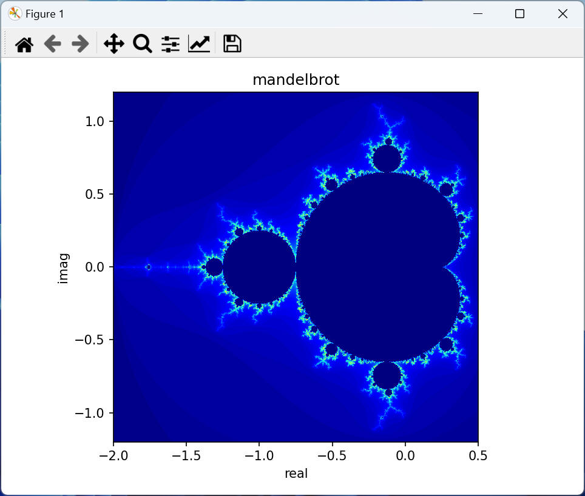
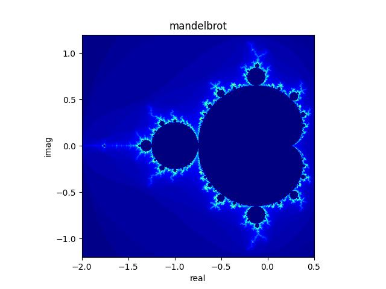

Python でマンデルブロ集合を計算して画面へ表示するプログラムを作成します。合わせて作成した画像を JPEG ファイルで保存します。
マンデルブロ集合を Python で描画するプログラムを作成します。
| プログラム言語 : | Python, | 3.10.7 |
| OS : | Windows11 home, | 22H2 |
全プログラムソースコードを以下に記載します。
私のノートＰＣで実行時間 約35秒 で描画できました。
["mandelbrot.py"]
'''
マンデルブロ集合の画像を作成する
Libraries
---------
numpy : 数値計算
pip install numpy
matplotlib : グラフ描画
pip install matplotlib
'''
import numpy as np
from matplotlib import pyplot as plt
from matplotlib.colors import Normalize
STEP_COUNT = 100
MESH = 1000
REAL_MIN = -2
REAL_MAX = 0.5
IMAG_MIN = -1.2
IMAG_MAX = 1.2
def check_mandelbrot(c):
'''
１ポイントのマンデルブロ演算を行う
Parameters
----------
c : complex
マンデルブロ演算を行う対象の複素数
Returns
-------
n : int
マンデルブロ演算を行って発散した計算回数 または STEP_COUNT。
STEP_COUNT を返す場合は発散しなかったことを意味する。
'''
z = complex(0, 0)
n = 0
while np.abs(z) <= 2 and n < STEP_COUNT:
z = z ** 2 + c
n += 1
return n
def create_mandelbrot_data():
'''
概要： マンデルブロー集合を計算する
Returns
-------
mandelbrot_data : numpy.ndarray<float64>[MESH][MESH]
マンデルブロ計算結果を格納した二次元配列
'''
real, imag = np.meshgrid(
np.linspace(REAL_MIN, REAL_MAX, MESH),
np.linspace(IMAG_MIN, IMAG_MAX, MESH))
length = len(real.ravel())
mandelbrot_data = np.zeros(length)
for i in range(length):
c = complex(real.ravel()[i], imag.ravel()[i])
n = check_mandelbrot(c)
if n < STEP_COUNT:
mandelbrot_data[i] = n
mandelbrot_data = np.reshape(mandelbrot_data, real.shape)
return mandelbrot_data
def create_jpg(mandelbrot_data):
'''
概要： マンデルブロー画像を表示、JPEG画像として保存、をする
Parameters
----------
mandelbrot_data : numpy.ndarray<float64>[MESH][MESH]
マンデルブロ計算結果を格納した二次元配列。
配列内の値は マンデルブロ演算を行って発散した計算回数。
発散しなかった場合の値は 0 を記録。
'''
# imshow で画像が上限反転するので、先にデータを反転させる
mandelbrot_data = mandelbrot_data[::-1]
# 左右反転させる場合はこんな感じで書く
#for i in range(len(mandelbrot_data)):
# mandelbrot_data[i] = mandelbrot_data[i][::-1]
fig = plt.figure()
# サブプロット領域を作成。"111" = "1,1,1"。あまり気にしなくてよい。
# (FYI) https://qiita.com/kenichiro_nishioka/items/8e307e164a4e0a279734
ax = fig.add_subplot(111)
# 軸ラベルを追加
ax.set_title('mandelbrot')
ax.set_xlabel('real')
ax.set_ylabel('imag')
# 画像作成
ax.imshow(mandelbrot_data, cmap='jet', norm=Normalize(vmin=0, vmax=STEP_COUNT), extent=[REAL_MIN, REAL_MAX, IMAG_MIN, IMAG_MAX])
# JPEG画像保存
plt.savefig("mandelbrot.jpg")
# tight_layout() メソッドはサブプロット間の正しい間隔を自動的に維持します。
# (ここでは１つのグラフのみを表示するので意味はないかもしれません...。参照元の記載がこうなっていたので記載しています。)
plt.tight_layout()
# 画像を表示
plt.show()
# 画像を閉じる
plt.close()
def main():
'''
このプログラムの main 関数
'''
#
mandelbrot_data =create_mandelbrot_data()
create_jpg(mandelbrot_data)
if __name__ == "__main__":
main()
図．プログラム実行時の画面表示

図．保存された JPEG 画像

本ページの情報は、特記無い限り下記 MIT ライセンスで提供されます。
| 2023-08-07 | - | 新規作成 |